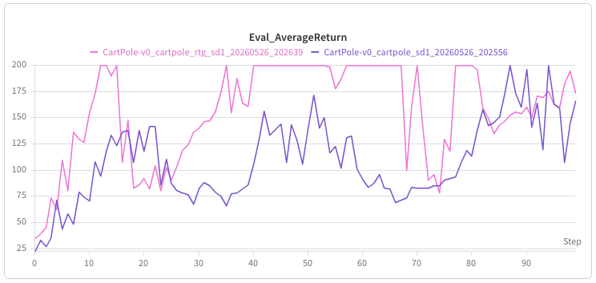
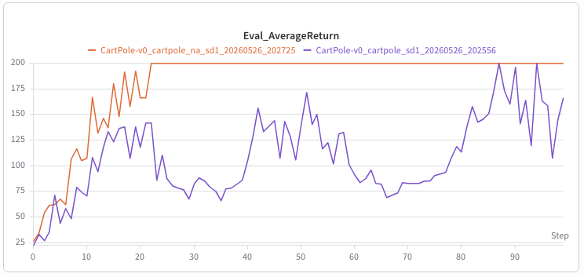
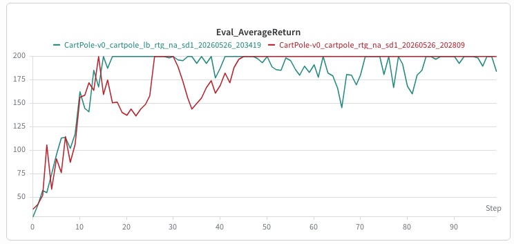
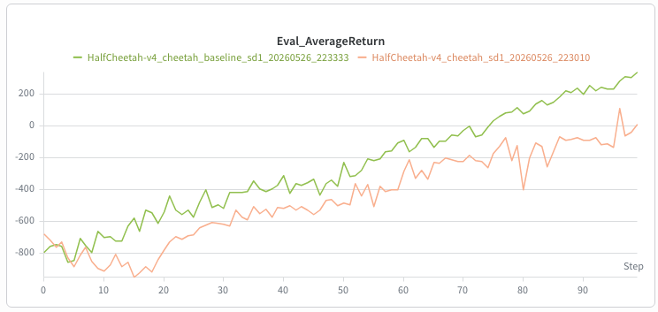
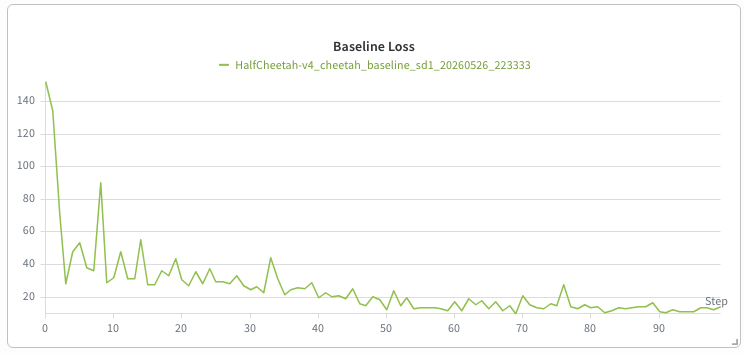
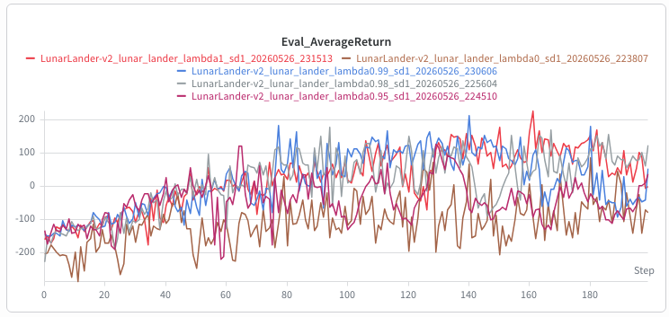
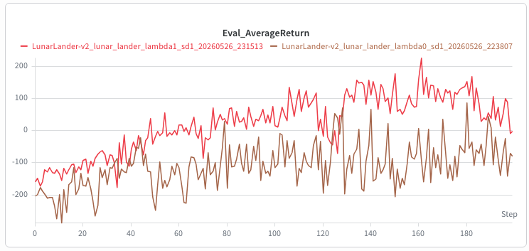

In this page, I study policy gradient methods for directly optimizing stochastic policies. I also discuss variance reduction and generalized advantage estimation as practical tools for improving the stability and efficiency of policy gradient algorithms.
Policy Gradient Theory
In policy gradient methods, we directly search for policy parameters $\theta$ that maximize the expected return. Instead of learning only a value function and deriving a policy indirectly, the policy itself is the object being optimized.
$$ \begin{aligned} J(\theta) = \mathbb{E}_{\tau \sim p_\theta(\tau)} \left[ r(\tau) \right] \end{aligned} $$A rollout $\tau$ of horizon $H$ contains the sequence of states and actions generated by the current policy. Its probability can be factorized into the initial state distribution, the policy probabilities, and the environment transition probabilities.
$$ \begin{aligned} p_\theta(\tau) = p(s_0, a_0, \cdots, s_{H-1}, a_{H-1}) = p(s_0)\pi_\theta(a_0|s_0) \prod_{t=1}^{H-1} p(s_t|s_{t-1},a_{t-1})\pi_\theta(a_t|s_t) \end{aligned} $$The return of the whole rollout is the sum of rewards collected at each time step.
$$ \begin{aligned} r(\tau) = r(s_0,a_0,\cdots,s_{H-1},a_{H-1}) = \sum_{t=0}^{H-1} r(s_t,a_t) \end{aligned} $$A natural first attempt is to approximate the expectation with sampled trajectories. This gives a valid Monte Carlo estimate of the objective value, but it does not yet give a useful expression for the gradient. Once trajectories $\tau^1,\cdots,\tau^N$ are sampled from $p_\theta(\tau)$, the empirical return $\frac{1}{N}\sum_i r(\tau^i)$ is treated as a fixed number with respect to $\theta$. Therefore, directly differentiating this empirical return with respect to $\theta$ gives zero.
$$ \begin{aligned} J(\theta) = \mathbb{E}_{\tau\sim p_\theta(\tau)} \left[ r(\tau) \right] \approx \frac{1}{N} \sum_{i=1}^{N} r(\tau^i), \qquad \tau^i \sim p_\theta(\tau) \end{aligned} $$ $$ \begin{aligned} \nabla_\theta \left( \frac{1}{N} \sum_{i=1}^{N} r(\tau^i) \right) = 0 \end{aligned} $$Instead, we want to rewrite the gradient itself as an expectation over trajectories sampled from $p_\theta(\tau)$, while keeping the dependence on $\theta$ inside the integrand. Once it has this form, the usual Monte Carlo approximation becomes valid.
$$ \begin{aligned} \nabla_\theta J(\theta) &= \nabla_\theta \mathbb{E}_{\tau\sim p_\theta(\tau)} \left[ r(\tau) \right] \\ &= \mathbb{E}_{\tau\sim p_\theta(\tau)} \left[ \nabla_\theta \log p_\theta(\tau)r(\tau) \right] \end{aligned} $$This identity comes from rewriting the expectation as an integral over trajectories. Since the reward function itself does not depend on $\theta$, the gradient acts on the trajectory distribution $p_\theta(\tau)$.
$$ \begin{aligned} \nabla_\theta J(\theta) &= \nabla_\theta \mathbb{E}_{\tau\sim p_\theta(\tau)} \left[ r(\tau) \right] \\ &= \nabla_\theta \int p_\theta(\tau)r(\tau)d\tau \\ &= \int \nabla_\theta p_\theta(\tau)r(\tau)d\tau \end{aligned} $$We can then multiply and divide by $p_\theta(\tau)$, which turns the derivative of the trajectory distribution into the derivative of its log probability.
$$ \begin{aligned} \int \nabla_\theta p_\theta(\tau)r(\tau)d\tau &= \int p_\theta(\tau) \frac{\nabla_\theta p_\theta(\tau)}{p_\theta(\tau)} r(\tau)d\tau \\ &= \int p_\theta(\tau) \nabla_\theta \log p_\theta(\tau)r(\tau)d\tau \\ &= \mathbb{E}_{\tau\sim p_\theta(\tau)} \left[ \nabla_\theta \log p_\theta(\tau)r(\tau) \right] \end{aligned} $$Now the gradient can be estimated from sampled trajectories without differentiating through the sampling process itself.
$$ \begin{aligned} \nabla_\theta J(\theta) &= \nabla_\theta \mathbb{E}_{\tau\sim p_\theta(\tau)} \left[ r(\tau) \right] \\ &= \mathbb{E}_{\tau\sim p_\theta(\tau)} \left[ \nabla_\theta \log p_\theta(\tau)r(\tau) \right] \\ &\approx \frac{1}{N} \sum_{i=1}^{N} \nabla_\theta \log p_\theta(\tau^i)r(\tau^i) \end{aligned} $$Finally, because the environment dynamics are not functions of $\theta$, only the policy terms remain when differentiating $\log p_\theta(\tau)$. This gives the vanilla policy gradient estimator, also known as the REINFORCE estimator.
Variance Reduction
The vanilla REINFORCE estimator is mathematically valid, but it is usually noisy in practice. The reason is that the gradient is estimated from sampled trajectories, so the update direction depends on Monte Carlo returns.
Reward-to-go
In the vanilla estimator, the action at time $t$ is weighted by the full trajectory return $\sum_{t=0}^{H-1} r(s_t^i,a_t^i)$. However, an action cannot affect rewards that occurred before it was selected. This means that past rewards add noise to the gradient estimate without providing useful credit assignment information for the current action.
Therefore, we can replace the full trajectory return with the reward-to-go $\sum_{t'=t}^{H-1} r(s_{t'}^i,a_{t'}^i)$, which only sums rewards from the current time step to the end of the trajectory.
The equality below says that replacing the full return with reward-to-go does not change the expected policy gradient. The only terms removed are the past rewards with $t' < t$, so it is enough to show that those terms vanish in expectation.
$$ \begin{aligned} \nabla_\theta J(\theta) &= \mathbb{E}_{\tau\sim p_\theta(\tau)} \left[ \sum_{t=0}^{H-1} \nabla_\theta \log \pi_\theta(a_t|s_t) \left( \sum_{t'=0}^{H-1} r(s_{t'},a_{t'}) \right) \right] \\ &= \mathbb{E}_{\tau\sim p_\theta(\tau)} \left[ \sum_{t=0}^{H-1} \nabla_\theta \log \pi_\theta(a_t|s_t) \left( \sum_{t'=t}^{H-1} r(s_{t'},a_{t'}) \right) \right] \end{aligned} $$For a removed reward term $r(s_{t'},a_{t'})$ with $t' < t$, the claim is:
Let $\tau_{i:j}=(s_i,a_i,s_{i+1},a_{i+1},\cdots,s_j,a_j)$. Since $r(s_{t'},a_{t'})$ is determined before action $a_t$ is sampled, we can condition on the trajectory up to $t'$ and separate that reward from the expectation over the later part of the trajectory.
$$ \begin{aligned} &\mathbb{E}_{\tau\sim p_\theta(\tau)} \left[ \nabla_\theta \log \pi_\theta(a_t|s_t)r(s_{t'},a_{t'}) \right] \\ &= \mathbb{E}_{\tau_{0:t}\sim p_\theta(\tau_{0:t})} \left[ \nabla_\theta \log \pi_\theta(a_t|s_t)r(s_{t'},a_{t'}) \right] \\ &= \mathbb{E}_{\tau_{0:t'}\sim p_\theta(\tau_{0:t'})} \left[ \mathbb{E}_{\tau_{t'+1:t}\sim p_\theta(\tau_{t'+1:t}|\tau_{0:t'})} \left[ \nabla_\theta \log \pi_\theta(a_t|s_t)r(s_{t'},a_{t'}) \right] \right] \\ &= \mathbb{E}_{\tau_{0:t'}\sim p_\theta(\tau_{0:t'})} \left[ r(s_{t'},a_{t'}) \cdot \mathbb{E}_{\tau_{t'+1:t}\sim p_\theta(\tau_{t'+1:t}|\tau_{0:t'})} \left[ \nabla_\theta \log \pi_\theta(a_t|s_t) \right] \right] \end{aligned} $$After this separation, the remaining inner expectation only needs the distribution of $s_t$ and the policy that samples $a_t$ from that state. Therefore, we rewrite it by first averaging over $s_t$, and then averaging over $a_t \sim \pi_\theta(a_t|s_t)$.
$$ \begin{aligned} &\mathbb{E}_{\tau_{0:t'}\sim p_\theta(\tau_{0:t'})} \left[ r(s_{t'},a_{t'}) \cdot \mathbb{E}_{s_t\sim p_\theta(s_t|\tau_{0:t'})} \left[ \mathbb{E}_{a_t\sim\pi_\theta(a_t|s_t)} \left[ \nabla_\theta \log \pi_\theta(a_t|s_t) \right] \right] \right] \\ &= \mathbb{E}_{\tau_{0:t'}\sim p_\theta(\tau_{0:t'})} \left[ r(s_{t'},a_{t'}) \cdot \mathbb{E}_{s_t\sim p_\theta(s_t|\tau_{0:t'})} \left[ \int \pi_\theta(a_t|s_t) \nabla_\theta \log \pi_\theta(a_t|s_t)da_t \right] \right] \\ &= \mathbb{E}_{\tau_{0:t'}\sim p_\theta(\tau_{0:t'})} \left[ r(s_{t'},a_{t'}) \cdot \mathbb{E}_{s_t\sim p_\theta(s_t|\tau_{0:t'})} \left[ \int \nabla_\theta \pi_\theta(a_t|s_t)da_t \right] \right] \end{aligned} $$The last step uses the normalization of the policy distribution: $\int \pi_\theta(a_t|s_t)da_t=1$. Therefore, its gradient with respect to $\theta$ is zero, so the removed past-reward term contributes nothing in expectation.
Baseline
A second variance reduction trick is to subtract a baseline from the reward-to-go. Intuitively, the baseline recenters the return signal so that the update depends more on whether an action did better or worse than a reference value.
$$ \begin{aligned} \nabla_\theta J(\theta) = \mathbb{E}_{\tau\sim p_\theta(\tau)} \left[ \sum_{t=0}^{H-1} \nabla_\theta \log \pi_\theta(a_t|s_t) \left( \sum_{t'=t}^{H-1} r(s_{t'},a_{t'}) - b \right) \right] \end{aligned} $$To see why this does not change the expected policy gradient, consider the extra term introduced by subtracting a constant baseline $b$.
More generally, the baseline can depend on the state. This is useful because different states can have very different typical returns. In practice, the baseline is usually a learned value function $\hat{V}_\phi^\pi(s_t)$ that approximates the expected reward-to-go from state $s_t$.
$$ \begin{aligned} \hat{V}_\phi^\pi(s_t) \approx V^\pi(s_t) = \mathbb{E}_{\tau\sim p_\theta(\tau)} \left[ \sum_{t'=t}^{H-1} r(s_{t'},a_{t'}) \mid s_t \right] \end{aligned} $$With this choice, the update is centered by the estimated value of the current state. Even if the value function is imperfect, this form remains unbiased because a state-dependent baseline is still allowed.
Discounting
Discounting introduces a discount factor $\gamma \in [0,1]$ to reduce the weight of rewards that occur farther in the future. This can reduce variance because distant future rewards are usually more uncertain: they depend on more future actions, transitions, and accumulated randomness.
To incorporate discounting, we first modify the original objective $J(\theta)$ into a discounted objective $J^\gamma(\theta)$.
Applying the same policy gradient derivation and reward-to-go idea to this discounted objective gives the following estimator. Here, the discount exponent is the absolute time index $t'$.
Note that introducing discounting means we are no longer optimizing the original undiscounted objective; technically, $J^\gamma(\theta) \neq J(\theta)$. This makes the estimator biased with respect to $J(\theta)$, but the change is often useful in practice. It reduces variance, matches tasks where immediate rewards should matter more than delayed rewards, and helps handle infinite-horizon problems by preventing returns from diverging when $H=\infty$.
In practice, we usually apply discounting directly to the reward-to-go. This replaces $\gamma^{t'}$ with $\gamma^{t'-t}$, so the discount is measured relative to the action time $t$.
The difference is important. In the previous estimator, the reward-to-go for action $a_t$ contains $\gamma^{t'}$, so all terms for later time steps are scaled by the absolute time index. Equivalently, a factor of $\gamma^t$ can be pulled out, which makes the policy care less about states that happen later in the trajectory. In the reward-to-go version, the immediate reward after action $a_t$ has weight $\gamma^0=1$, and only rewards farther in the future from that action are downweighted. This is why the $\gamma^{t'-t}$ form is the one usually used in practice.
The value-function baseline should match this discounted reward-to-go target.
Combining discounted reward-to-go with a learned value-function baseline gives the estimator that is usually used as the practical policy gradient objective.
Generalized Advantage Estimation
From the previous section, the discounted reward-to-go $\sum_{t'=t}^{H-1}\gamma^{t'-t}r(s_{t'},a_{t'})$ plays the role of $Q^\pi(s_t,a_t)$. If we subtract the value function from it, we get an advantage estimate.
$$ \begin{aligned} A^\pi(s_t,a_t) = Q^\pi(s_t,a_t)-V^\pi(s_t) \end{aligned} $$There are two common ways to estimate $Q^\pi(s_t,a_t)$. One is to use the sampled future rewards directly. The other is to use one reward and estimate the remaining future return with the value function.
$$ \begin{aligned} Q^\pi(s_t,a_t) &\approx \sum_{t'=t}^{H-1} \gamma^{t'-t}r(s_{t'},a_{t'}) \\ Q^\pi(s_t,a_t) &\approx r(s_t,a_t)+\gamma V^\pi_\phi(s_{t+1}) \end{aligned} $$After subtracting $V^\pi_\phi(s_t)$, these become advantage estimates. The one-step version is written as $\delta_t$.
The Monte Carlo version uses more real sampled rewards, so it has lower bias but higher variance. The one-step version has lower variance, but it depends more on the learned value function.
An $n$-step return is a middle point between these two choices. It uses $n$ sampled rewards, and then uses the value function for the rest.
$$ \begin{aligned} R^\pi_{n,t} = \sum_{t'=t}^{t+n-1} \gamma^{t'-t}r(s_{t'},a_{t'}) + \gamma^n V^\pi_\phi(s_{t+n}) \end{aligned} $$If we subtract the value baseline from this return, we get the $n$-step advantage estimate.
A larger $n$ uses more sampled rewards, so it usually lowers bias but increases variance. A smaller $n$ relies more on the value function, so it usually lowers variance but increases bias.
Generalized Advantage Estimation combines many $n$-step advantage estimates instead of choosing just one value of $n$. The parameter $\lambda \in [0,1]$ controls how much we rely on longer estimates.
The factor $\frac{1-\lambda}{1-\lambda^{H-t}}$ is a normalizing constant. Equivalently, $\frac{1-\lambda}{1-\lambda^{H-t}} = \frac{1}{1+\lambda+\cdots+\lambda^{H-t-1}}$, so the weights on the different $n$-step estimates sum to 1.
A higher $\lambda$ puts more weight on larger $n$, so the estimate becomes closer to the Monte Carlo version. A lower $\lambda$ puts more weight on shorter estimates. In other words, increasing $\lambda$ usually decreases bias and increases variance, while decreasing $\lambda$ does the opposite.
We do not need to compute every $n$-step estimate separately. The same GAE estimate can be written using the $\delta_t$ terms:
This form is convenient because we can compute it with one backward pass through a trajectory.
Policy Gradient Implementation
1. Vanilla Policy Gradient
This implementation studies vanilla policy gradient on CartPole-v0, a discrete-action
control environment. Since the action space is discrete, the policy network outputs logits and
uses a categorical distribution to sample actions.
def forward(self, obs):
logits = self.logits_net(obs)
return torch.distributions.Categorical(logits=logits)During the actor update, the policy evaluates the log probability of the actions sampled during rollout. These log probabilities are weighted by the advantage values.
dist = self(obs)
log_probs = dist.log_prob(actions)
loss = -(log_probs * advantages).mean()
The negative sign appears because the policy gradient objective is maximized, while the optimizer
performs gradient descent on a loss. Minimizing
-(log_probs * advantages).mean() therefore increases the probability of actions with
positive advantage and decreases the probability of actions with negative advantage.
1.1 Discounted Cumulative Return
This part implements the basic REINFORCE estimator. For each sampled trajectory, every action log-probability is weighted by the same full discounted return of that trajectory.
The helper below computes this value for each sampled trajectory. Since the vanilla estimator uses the full trajectory return, every time step in the same trajectory receives the same value.
def discounted_return(rewards, gamma):
q_values = []
for reward in rewards:
reward = np.asarray(reward, dtype=np.float32)
ret = 0.0
for r in reversed(reward):
ret = r + gamma * ret
q_values.append(np.full(len(reward), ret, dtype=np.float32))
return q_values
The inner loop computes the discounted sum by moving backward through the rewards. If
reward = [r_0, r_1, ..., r_{H-1}], the update
ret = r + gamma * ret gives:
This matches the discounted cumulative return $R(\tau^i)$. The final line
np.full(len(reward), ret) repeats this return for every time step, so each action in
the trajectory is weighted by the same full-trajectory value.
1.2 Reward-to-go
This part changes only the return estimator. Instead of giving every action the full trajectory return, the action at time $t$ is weighted by the discounted rewards from time $t$ to the end of the trajectory.
The code is similar to the discounted cumulative return, but now we store a different value at each time step.
def discounted_reward_to_go(rewards, gamma):
q_values = []
for reward in rewards:
reward = np.asarray(reward, dtype=np.float32)
traj_q_values = np.zeros(len(reward), dtype=np.float32)
running_q = 0.0
for t in range(len(reward) - 1, -1, -1):
running_q = reward[t] + gamma * running_q
traj_q_values[t] = running_q
q_values.append(traj_q_values)
return q_values
The backward loop makes running_q equal to the discounted future reward starting from
the current time step. After the update at time $t$, it contains:
Unlike discounted_return, this function saves running_q into
traj_q_values[t] at every time step. Therefore, each action is weighted only by the
rewards that come after that action.
1.3 CartPole Results
I evaluate vanilla policy gradient on CartPole-v0. The plots below focus on three
comparisons: reward-to-go, advantage normalization, and batch size.
This plot compares the full-trajectory return estimator with reward-to-go. Reward-to-go removes rewards that happened before the current action, so each action is trained with a more relevant return estimate.

This plot compares training with and without advantage normalization. Here, the advantage is the Q-value estimate used to weight the policy gradient update, and normalization changes its scale before multiplying it with the log probability.

This plot compares small-batch and large-batch training after applying both reward-to-go and advantage normalization. With the estimator fixed, the plot shows how collecting more samples per update changes the learning curve.

2. Using a Neural Network Baseline
The next experiment uses HalfCheetah-v4, where the action is a continuous vector.
Because the policy cannot choose from a fixed list of discrete actions, it outputs a probability
distribution over real-valued actions.
2.1 Continuous Action Policy
For a continuous action space, the policy uses a Gaussian distribution. The network predicts the
mean of the distribution, and logstd is learned as a trainable parameter. Sampling from
this distribution gives the action used in the environment.
means = self.mean_net(obs)
stds = torch.exp(self.logstd)
return torch.distributions.Independent(
torch.distributions.Normal(loc=means, scale=stds),
1
)
Normal defines one Gaussian distribution for each action dimension.
Independent(..., 1) treats those dimensions as one action vector, so
log_prob(actions) returns one log probability for each sampled action.
2.2 Value Critic
The neural network baseline is implemented as a value critic. It takes a state as input and predicts the expected discounted reward-to-go from that state.
$$ \begin{aligned} V^\pi_\phi(s_t) \approx \mathbb{E} \left[ \sum_{t'=t}^{H-1} \gamma^{t'-t}r(s_{t'},a_{t'}) \mid s_t \right] \end{aligned} $$The critic is trained by regression. The target is the discounted reward-to-go, and the prediction is the value estimate for each observation.
pred_values = self.network(obs).squeeze(-1)
loss = torch.nn.functional.mse_loss(pred_values, q_values)2.3 Advantage Estimation with a Baseline
Without a baseline, the policy gradient update weights each log probability by the reward-to-go estimate. With a neural network baseline, we subtract the critic prediction from that reward-to-go. The result is an advantage estimate.
$$ \begin{aligned} \hat{A}(s_t,a_t) = \hat{Q}(s_t,a_t) - V^\pi_\phi(s_t) \end{aligned} $$values = ptu.to_numpy(self.critic(ptu.from_numpy(obs)).squeeze(-1))
advantages = q_values - valuesIf the sampled reward-to-go is larger than the critic's prediction, the advantage becomes positive. If it is smaller, the advantage becomes negative. Therefore, the policy update focuses on whether the sampled action performed better or worse than the baseline expectation for that state.
2.4 HalfCheetah Results
The return plot compares policy gradient with and without the neural network baseline. The baseline version improves faster and reaches a higher return.


The baseline loss plot tracks the critic update. As the loss decreases, the critic becomes a better fit to the reward-to-go targets, so the advantage estimate $\hat{Q}(s_t,a_t)-V^\pi_\phi(s_t)$ becomes less noisy.
3. Implementing Generalized Advantage Estimation
After adding the value critic, we can use it to compute generalized advantage estimates. In this
experiment, the main question is how the choice of $\lambda$ changes learning in
LunarLander-v2.
3.1 Recursive GAE Calculation
The implementation computes the temporal-difference error at each time step and then accumulates it backward through the trajectory.
$$ \begin{aligned} \delta_t = r_t + \gamma V^\pi_\phi(s_{t+1}) - V^\pi_\phi(s_t) \end{aligned} $$values = np.append(values, [0])
advantages = np.zeros(batch_size + 1)
for i in reversed(range(batch_size)):
delta = (
rewards[i]
+ gamma * (1 - terminals[i]) * values[i + 1]
- values[i]
)
advantages[i] = (
delta
+ gamma * gae_lambda * advantages[i + 1] * (1 - terminals[i])
)
advantages = advantages[:-1]The extra value at the end makes the backward recursion easier to write. The terminal mask stops the recursion at the end of an episode, so the estimate does not incorrectly use the next trajectory as if it were a continuation of the current one.
$$ \begin{aligned} \hat{A}^{\mathrm{GAE}}_t = \delta_t + \gamma\lambda \hat{A}^{\mathrm{GAE}}_{t+1} \end{aligned} $$3.2 Effect of $\lambda$
The parameter $\lambda$ controls how far the advantage estimate looks into the future. When $\lambda=0$, GAE becomes the one-step TD advantage. When $\lambda=1$, it becomes close to the Monte Carlo advantage based on the full reward-to-go.
The first plot compares the Eval_AverageReturn curves for
$\lambda \in \{0, 0.95, 0.98, 0.99, 1\}$. The second plot isolates the two endpoints,
$\lambda=0$ and $\lambda=1$, to make the difference between one-step TD advantage and Monte Carlo
advantage easier to see.


In these runs, $\lambda=1$ performs better than $\lambda=0$. The $\lambda=0$ curve stays lower for most of training, while the $\lambda=1$ curve reaches higher returns more often.